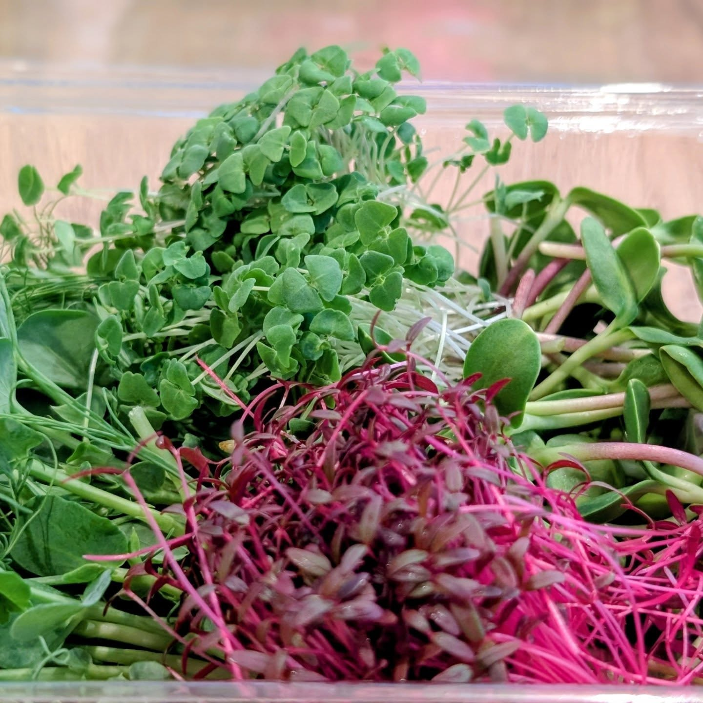
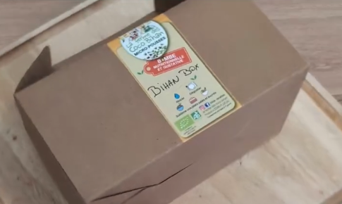

Bienvenue à La Ferme des Coco Bihan, à Ploëzal. Nous cultivons avec passion des micro-pousses d'exception et notre kit de culture « Ker Bihan Box » pour éveiller vos papilles et vos mains.
Des produits cultivés dans le respect de la nature, entre tradition et savoir-faire artisanal.

Véritables concentrés de saveurs, de couleurs et de vitalité. Récoltées au stade idéal, elles subliment vos plats de l'entrée au dessert avec une touche gastronomique unique.

Envie de cultiver vous-même ? Notre kit de graines à semer clé en main vous permet de faire pousser facilement vos propres micro-pousses à la maison. Ludique, naturel et 100% local.
Quand la nature rencontre la gastronomie pour éveiller vos sens.
Sublimez vos plats au quotidien grâce à nos micro-pousses :
Nature, nutrition & bien-être à la ferme.
Concentré de nutriments : Saviez-vous que les micro-pousses possèdent des valeurs nutritionnelles exceptionnelles, souvent bien supérieures à celles des légumes adultes ?
Une démarche locale : Chaque graine est semée, choyée et récoltée à la main en Côtes-d'Armor, dans une démarche respectueuse de l'environnement et du rythme des saisons.
Retrouvez les articles et retours médias sur notre ferme et nos productions.
« Une initiative locale remarquable qui apporte fraîcheur et originalité sur les tables de la région. Les micro-pousses de Ploëzal séduisent les chefs et les gourmands. »
« Avec la Ker Bihan Box, cultiver chez soi devient un jeu d'enfant ludique et pédagogique. Une belle découverte artisanale en Côtes-d'Armor. »
« Le goût et l'engagement au rendez-vous. La Ferme des Coco Bihan réinvente le circuit court avec passion et exigence de qualité. »
Une question sur nos micro-pousses, une commande de "Ker Bihan Box" ou l'envie d'échanger ?
Suivez toutes nos actualités, nos récoltes et les coulisses de la ferme directement sur nos réseaux sociaux :
📍 Basés à Ploëzal (Côtes-d'Armor, Bretagne). Vente directe et points de partenariats locaux.